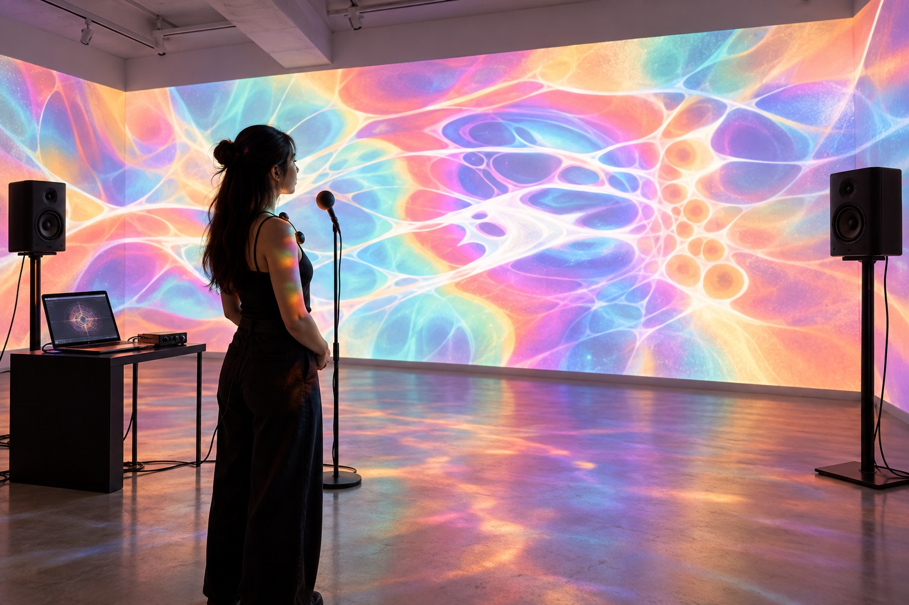
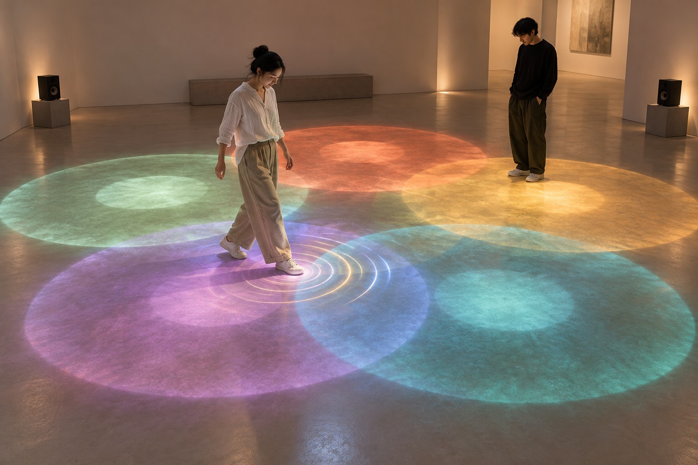
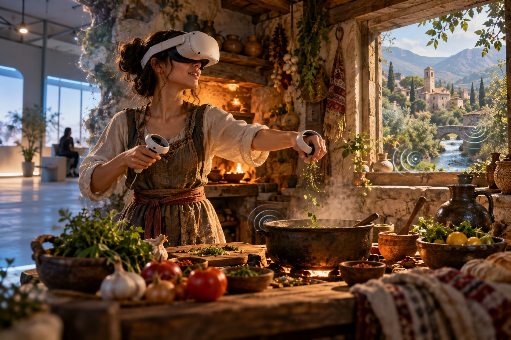
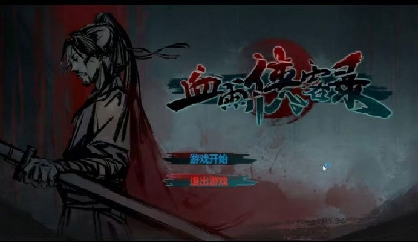

Portfolio
Shuo Shen · Sound Designer
Game Audio Design /
Game Sound Redesign
Watch on YouTube ↗Game-engine implementation
Experiments & Creative Technology /

AI-generated concept visualization
Generative music · Interactive installation
Immersive by Your Own Music
An installation that captures heartbeat and breathing, translating bodily rhythms into evolving ambient music and visual feedback.

AI-generated concept visualization
Spatial interaction · Musical interface
Ground
An experimental floor-based instrument: position, overlapping zones, and movement shape an evolving combination of traditional instrumental sounds.

AI-generated concept visualization
VR audio · Interactive storytelling
Taste of Redemption
A narrative VR experience about cooking and survival in the aftermath of war. Realistic sound and positional cues connect the player to an unfamiliar world.

Game development · Unity
Blood Tear Rain
A wuxia-inspired prototype combining turn-based card decisions with side-scrolling combat. Game design, sound design, and Unity development.
About
Shuo Shen
I’m Shuo Shen, a sound designer with a background at the Sound School of Beijing Film Academy. My experience spans film, games, advertising, short-form series, TTS and live sound, combining sound design and technical audio across major commercial productions.
Audio & Video Production
Pro ToolsAbleton Live 11Adobe Premiere ProAvid Media ComposerRecordingEditingSound designAudio post-production
Interaction & Technology
WwiseCRIWAREUnityPure DataMax/MSPReaktorProcessingMATLABC++
Contact
Let's connect.
For sound design opportunities, collaborations, or a conversation about the work.
WeChat / 微信ssjustme